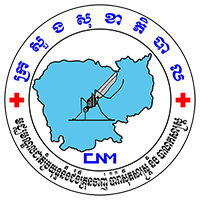

Introduction
{kind=link}
As a malaria program moves towards the elimination phase there is a need to react promptly to every malaria positive case and not wait for information to flow through a routine system. The new malaria information was designed for real-time reporting to address this need and support the move towards malaria elimination in Cambodia. The new system was designed by Malaria National Program (CNM) staff and the system is being implemented in 21 provinces since November 2017, covering 3170 villages that have Village Malaria Workers (VMW) and 816 health centers in Cambodia. All malaria cases reported from Village Malaria Workers and Health Center staff lead to automatic alerts to appropriate district officer (based on the location of the village and health center) to take action in real-time. The technology has been designed to engage the whole malaria control program team from the senior staff of the National Center for Parasitology, Entomology and Malaria Control (CNM) at the central level to the voluntary workers living in the endemic villages around the country. This level of coordination and efficiency is required during the final stages of malaria elimination. For a system to be useful it must be designed in close collab with the users. It must be responsive to the constantly changing requirements of a country in the end stages of malaria elimination where new ideas and initiatives are being delivered frequently. This is why we argue that development in-country is the most appropriate way.
MIS (Malaria Information System) is an web base application was originally developed by CNM.
Who is for MIS
Web base application (Recommended Google Chrome)
User |
Devices |
|---|---|
CNM, PHD, CSO, OD |
Computer, Tablet, Smart Phone (Using browser) |
Adroid Application
User |
Devices |
|---|---|
HF staffs |
Tablet (Minimum screen size 10 inch) |
VMW |
Smart Phone |